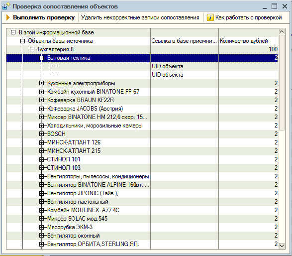
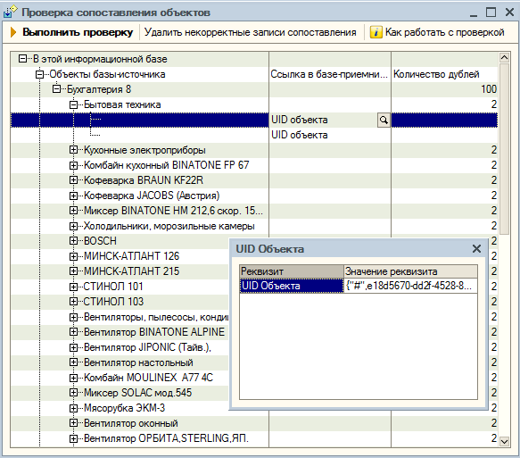

Проверка сопоставления объектов - механизм, позволяющий выявить текущие некорректные ситуации сопоставления.
Принцип работы
Производится проверка следующих ситуаций:
Для выполнения проверки следует нажать кнопку "Выполнить проверку".
После выполнения проверки сопоставления объектов на форме отображается дерево значений, в котором найденные ситуации сгруппированы по :

Объекты базы-источника отображаются как обычно.
Объекты базы-приемника отображаются как значение "UID объекта". Подставляется для удобного зрительного восприятия объектов базы-приемника. Посмотреть строковое представление уникального идентификатора объекта базы - приемника можно , воспользовавшись кнопкой открытия.
Способы исправления
Рассмотрим на примере один из вариантов исправления найденных некорректных ситуаций.

При обнаружении некорректных записей надо проанализировать причины возникновения таких записей. Наиболее частой причиной является некорректное заполнение полей поиска в информационной базе(дубли). Для исправления надо определить, в какой информационной базе созданы «склеенные» объекты.
Если это объект с надписью «UID объекта» - то это объект другой информационной базы. В этом случае надо открыть другую информационную базу и в записях регистре сведений «Соответствие объектов для обмена» найти объект по уникальному идентификатору (UID).
Если это иной объект – достаточно открыть элемент, воспользовавшись кнопкой просмотра.
Итак, вы нашли оба объекта. Теперь нужно проанализировать , что могло послужить причиной «склеивания». Для справочников это совпадения по полям поиска(информацию о них можно найти в документации), для документов это совпадение по номеру и дате(попадающей в диапазон периодичности документа).
Измените объекты таким образом, чтобы они при следующем сопоставлении не совпадали по полям поиска.
Выполните поиск совпадающих по полям поиска объектов – проверьте, что этих объектов там нет(после обмена справочниками выполнять поиск не нужно).
После исправления данных необходимо удалить некорректные записи сопоставления объектов. Это можно сделать, воспользовавшись кнопкой "Удалить некорректные записи сопоставления". При этом следует учитывать, что записи по исправленным объектам должны быть удалены как в базе-источнике, так и в базе-приемнике. Если в настройке обмена данными указано, что используется COM-соединение для обмена, будет выполнена попытка подключения к базе-приемнику для удаления некорректных записей. Если в настройке обмена данными указан иной режим работы обмена данными, то необходимо воспользоваться режимом эксперта в помощнике настройки обмена и сценарием "Изменение настройки обмена"(на одном из этапов можно будет запустит проверку сопоставления объектов), либо воспользоваться монитором обмена данными(на вкладке "Объекты обмена" доступна проверка сопоставления объектов).
Произведите обмен данными. После обмена проверьте правильность работы механизма сопоставления – объекты теперь должны быть сопоставлены 1:1.
Важно. Помните, что при неправильном сопоставлении справочников при исправлении необходимо также перенести все документы, в которых участвовали данные объекты.